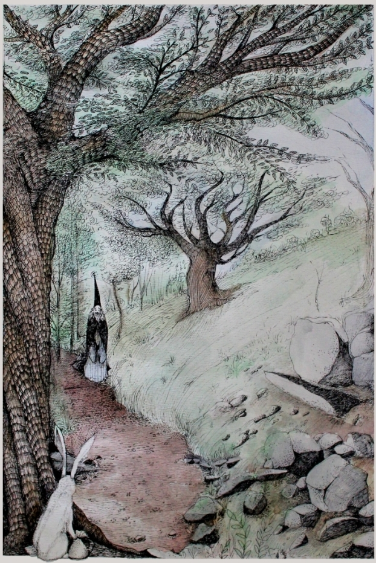

Bátornyuszi és a világ legszomorúbb embere
Volt egyszer egy gyönyörű rét, és körülötte egy hatalmas, sűrű erdő.
Ezen a réten és ebben az erdőben élt egy csapat nyuszi. Pontosan százan voltak.
A százból kilencvenkilenc szokásos, sima, átlagos nyuszi volt.
De a századik – különleges volt. Mert ő bátor volt. Így is hívták: Bátornyuszi.
Egy nyári délután Bátornyuszi gyógynövényeket gyűjtött egy csúnyán megfázott nyuszibarátjának, mikor az erdei ösvényen felfedezett egy alakot, amely közeledett felé.
Egy ember volt. Varázslóköpenyt hordott, lassan haladt az ösvényen Bátornyuszi felé, de nem vette őt észre. Háta hajlott volt, és az arca oly szomorú, hogy még a mindig vidám erdei tündérek is sírva fakadtak volna a láttán. Kétségkívül a világ legszomorúbb embere volt.
-Hát veled meg mi történt? Miért vagy ilyen szomorú? – szólította meg Bátornyuszi a varázslót.
-Ó, ne is kérdezd! – sóhajtott amaz. - Elküldtek. Megöregedtem... varázserőm kimerült... már a legegyszerűbb varázslatokra sem vagyok képes... a hercegemnek már semmi hasznára nem vagyok – panaszolta a varázsló, és – ha ez egyáltalán lehetséges – még szomorúbb lett egy picit.
-Ne lógasd az orrod! – próbálta Bátornyuszi vigasztalni. - Biztos van olyan varázslat, amit meg tudsz meg csinálni.
-Nincs, egyetlen egy sem! Nézd csak! Például egy zsugorító varázslat. Nemrég meg gyerekjáték volt számomra. Most pedig...
A varázsló elővette díszes varázspálcáját, rámutatott egy virágra és elmormogott egy varázsigét. A virág azonban egyáltalán nem zsugorodott össze, épp ellenkezőleg, nőni kezdett; végül akkora lett, mint egy fa. Egy közelben lévő méhecske először ijedten nézte a növekedést, majd nagy örömmel vetette rá magát az óriásvirágra, hogy aztán gyorsan elrepüljön, szólni a többi méhecskének.
-Vagy egy színváltoztató varázslat - most egy kőre mutatott a pálcájával, és elmondta a varázsigét. A kő mégis ugyanolyan színű maradt, elkezdett viszont összevissza ugrálni, mint egy szöcske, és közben gágogni, mint egy lúd.
-Gá, gá, gá! – és a szürke kő elugrált.
-Látod? – kérdezte a varázsló borúsan - semmi sem sikerül már énnekem.
-Hmm – mondta Bátornyuszi, akinek most már semmi vigasztaló nem jutott eszébe - azt mondtad, elküldtek.
-így van. Hosszú évekig a hercegem varázslója voltam. Nem messze innen van a vára, egy város közepén. Az erdő széléről látszanak a város falai.
Bátornyuszi ismerte ezeket a falakat látásból, bár a városban még sohasem járt.
-Sok feladatom volt – folytatta a varázsló - közéjük tartozott a herceg megborotválása minden reggel a megfelelő varázslattal. Ez hosszú évekig jól működött, hiszen nem nehéz a varázslat. De két nappal ezelőtt furcsa dolog történt. Hercegem szakálla nem tűnt el a varázslatom után, hanem ellenkezőleg, szörnyű sebességgel nőni kezdett. Csak nőtt és nőtt, és délre már hatalmas körszakálla volt. Egy napra rá a szakálla már a hasáig ért. Újra megpróbálkoztam a borotváló varázslattal, de csak vörösre változott a színe, és nőtt tovább. Más varázslatok sem akartak mar sikerülni, számtalan varázsbalesetem volt a varázslaboratóriumomban. Ma reggelre hercegem szakálla már olyan hosszú volt, hogy két szolgának kellett hordoznia. Mikor újra megpróbálkoztam a borotváló varázslattal, megint nem tűnt el a szakálla... hanem.... hanem apró madárkák jelentek meg a szakállában és csivitelni kezdtek. Ekkor szörnyű haragra gerjedt hercegem, kidobott a palotájából, és meghagyta, hagyjam el a várost örökre.
-És most mihez kezdesz? – kérdezte Bátornyuszi.
-Fogalmam sincs – válaszolta a varázsló.
-Akkor gyere el hozzánk nyuszikhoz, egy gyönyörű réten lakunk, és adunk neked szívesen finom salátát és répát.
A varázsló valójában nemigen szerette a salátát és a répát, mégis, napok óta először érzett némi örömöt.
A többi nyuszi kezdetben tartott a varázslótól, de Bátornyuszi meggyőzte őket, hogy nem bánt senkit, így végül üdvözölték, adtak neki vacsorát, és készítettek neki meleg avarból puha ágyat. A varázsló hamar elaludt és hangos horkolásának zaja töltötte be a rétet. Miközben a varázsló aludt, Bátornyuszi elhatározta, megpróbál neki segíteni.

A város valóban nem volt messze, viszont magas fallal volt körülvéve, amin csupán egyetlen bejárat volt; ezt pedig páncélinges, kardos katonák őrizték. Bátornyuszi elébük állt és bebocsáttatást kért, ám az őrök nem engedték be.
-Nyulaknak itt semmi keresnivalójuk!
Mit volt mit tenni, Bátornyuszi visszament a rétre és egész éjjel azon gondolkozott, hogyan lehetne a városba jutni. Reggel aztán megkérte a többi nyuszit, segítsenek egy alagutat ásni. Így a száz nyuszi azon a napon megásta a leghosszabb nyuszialagutat, amit a világ valaha látott. Estére készen is lett, és amikor besötétedett, Bátornyuszi leereszkedett a járatba, és futott, amíg meg nem érkezett a másik végén.
Ott óvatosan kidugta a fejét, és látta, hogy valóban a városban van, éppen a herceg palotája mellett. Gyorsan kiugrott a járatból, és óvatosan, hogy senki meg ne lássa, beosont a gyönyörű palotába.
Mindenhol csak arany és gyémánt. Bátornyuszi a trónterem felé vette az irányt; a herceggel akart beszelni. A trónteremben viszont éppen ünnepség zajlott, és ahogy Bátornyuszi hegyezte a fülét, világossá vált számára, hogy a herceg éppen egy új varázslót vesz fel.
A hercegnek már nem volt szakálla. Az új varázslóhoz fordult, és így szólt:
-Micsoda szerencse, kedves varázsló, hogy éppen ma keveredtél városunkba. Régi varázslóm sajnos elvesztette varázserejét, semmilyen varázslata nem sikerül mar, el kellett bocsájtanom. Mostantól te leszel az en varázslóm.
-Furcsa egy véletlen - gondolta magában Bátornyuszi - hogy éppen ma jelentkezik egy új varázsló.
Az ünnepség végén titokban követte az új varázslót a szobájába, ott pedig bebújt egy szekrénybe. Nem is kellett sokáig várnia, míg az új varázsló hangosan dicsekedni kezdett:
-Végre, végre, sikerült! Eltűnt a régi varázsló, és én léptem a helyébe! Működött a tervem! Az a szánni való öreg varázsló... valószínűleg még mindig nem tudja, miért mond csődöt minden varázslata - és gonoszul nevetett.
-Talán nem hallott még az én különleges varázsfőzetemről - majd levett az övéről egy kis üvegcsét, amiben furcsa, zöld színű folyadék lötyögött - egyetlen csepp a főzetből, és soha többe nem működik a varázspálca...soha többé!
-És ha a herceg tudná – itt ismét gonoszul felnevetett –, már nem sokáig áll az utamban. Nemsokára ÉN leszek ennek a városnak az ura; én leszek a herceg!
Bátornyuszi megvárta, míg ő is elaludt, majd halkan kiosont a szekrényből, a palotából, vissza a járaton keresztül a nyuszik rétjére.
Következő reggel Bátornyuszi megkérte a többi nyuszit, bővítsek ki a földalatti járatot úgy, hogy egy ember is átférjen rajta.
Az öreg varázslóhoz így szólt:
-Nem öregedtél meg, nem felejtettél el varázsolni. Gonosz fondorlatok vannak a háttérben. Menjünk ma este együtt a városba!
-De az őrök nem engednének be.
-Ezt bízd csak rám – mondta Bátornyuszi.
A kibővített járat készen is állt estére, az öreg varázsló és Bátornyuszi pedig elindultak rajta a város irányába. Útközben Bátornyuszi elmesélte, mit hallott a palotában. Végül kimásztak a járat másik végén, beosontak a palotába, és addig keresték a herceget, míg meg nem találták.
-Hát te meg mit keresel itt? – kérdezte a herceg csodálkozva, mikor meglátta az öreg varázslót - nem megmondtam, hogy soha többé nem akarlak látni? Új varázslóm van már, aki egyébként eltüntette a szakállamat, amire te képtelen voltál.
-Hercegem - mondta az öreg varázsló - hallgass meg. Összeesküvés áldozatává lettem.
Ekkor csatlakozott hozzájuk az új varázsló, és közbeszólt:
- Micsoda butaság, egyszerűen nem tudsz már rendesen varázsolni. Pusztulj innét!
-Azért nem tudok már rendesen varázsolni, mert te a zöld varázsfőzeteddel elátkoztad a pálcámat! Ott van a főzet, az öveden fityegő üvegcsében.
-Micsoda? Ez hazugság. Drága herceg, kérlek, dobd ki ezt a vénembert örökre a városból!
-Hazugság? – szólt bele Bátornyuszi, és minden szem rá szegeződött. - Valóban? Akkor cseppents rá a zöld folyadékodból a saját varázspálcádra, és meglátjuk, mi történik!
Az új varázsló visszahőkölt. Akárhogy is törte a fejét, nem tudott kiutat: bárhogy is dönt, mindenképp lelepleződik. Végül azt mondta:
-Hát jó. Igazat szólt a varázsló.
-Hogy micsoda? – kiáltott a herceg, aki már semmit sem értett.
-Valóban én voltam, aki a varázslód pálcáját tönkretette. Nem is volt nehéz, csak láthatatlanná kellett varázsolnom magam néhány nappal ezelőtt, beosonni a palotádba, és néhány cseppet tenni a varázslód pálcájára. Ezután mar csak várnom kellett, mivel tudtam, sokáig mar nem maradhat udvarodban. Mikor elüldözted, csak jelentkeznem kellett a helyére.
-De hát...de hát miért? Miért tetted ezt?
-Egyszerű. Ez csak a kezdet volt. Én fogok uralkodni ezen a városon, én leszek a herceg! A palotád, a kincseskamra – minden az enyém lesz!
-Ezt nem fogod megúszni szárazon – mondta a herceg, és kihúzta kardját.
-Dehogynem - válaszolta az új varázsló, és elővette a varázspálcáját - mivel most egérré változtatlak mindannyiótokat.
Mielőtt bárki bármit tehetett volna, pálcájával a hercegre, a régi varázslóra és Bátornyuszira mutatott, majd elmondta az egérré változtató varázsigét... ám ekkor furcsa dolog történt. A herceg, a régi varázsló és Bátornyuszi egyáltalán nem vált egérré, viszont megjelent a semmiből hét egér, akik azonnal az új varázslóhoz szaladtak és elkezdték rágcsálni a varázsköpenye szélét.
-Micsoda? Mi történt? – csodálkozott az új varázsló. - De mindegy is. Akkor inkább kővé változtatlak benneteket.
Ismét szikrák repültek szanaszéjjel a pálcájából, de senki sem vált kővé, hanem a varázspálca végén egy lufi jelent meg, lassan felfújódott, majd kipukkadt: DURR.
-Lehetetlen! – ordított az új varázsló - akkor... legyetek hát süketek és némák!
Pálcájából ekkor villámok lövelltek ki, de olyan fényesek, hogy mindenkinek be kellett hunynia a szemét. Mikor újra kinyitottak, előttük még mindig az új varázsló állt, de kezében már nem varázspálcája volt, hanem egy gyönyörű virágcsokor, amellyel még mindig a herceget, a régi varázslót és Bátornyuszit fenyegette.

-Mi történt? Hogyan lehetséges ez? – kérdezte az új varázsló kétségbeesve.
-Tudod - válaszolta Bátornyuszi - nekünk nyusziknak kíváncsi a természetünk. És én kíváncsi voltam, mégis mit tesz ez a te zöld főzeted egy varázspálcával. Ezért titokban tettem a tiedre is egy kicsit tegnap este.
-Jaj neeee...a varázspálcám, az én gyönyörű pálcám!
-Virágcsokor – javította ki Bátornyuszi. - Igen szép és színes. De attól tartok, varázsolni már nem lehet vele.
-Örség! – kiáltott a herceg, és tömlöcbe vetette az új varázslót.
Azután újra a régi varázslóhoz és Bátornyuszihoz fordult.
-Hogyan köszönhetem meg nektek? Megmentettetek engem és az egész várost ettől a gonosztevőtől. Varázslóm, kérlek, bocsáss meg nekem! Kérlek, szegődj újra hozzám, és légy ismét a varázslóm!
-Fogsz még valaha tudni rendesen varázsolni? – kérdezte Bátornyuszi.
-Nos, egy varázspálcát készíteni hosszadalmas és fáradságos munka - mondta az öreg varázsló mosolyogva - de lehetséges.
A herceg így folytatta:
-Te pedig, nyúl, mától barátaiddal együtt örökké szívesen látott vendégek lesztek városomban és palotámban.
És a herceg hét napon és hét éjszakán át tartó ünnepséget rendezett az egész városnak.
Ami a varázslót illeti...nemsokára neki is látott, hogy új varázspálcát készítsen magának.
De ezen az estén ö volt a legboldogabb ember az egész világon, és megfogadta, hogy amíg csak él, mindig hálás lesz a nyusziknak, és különösen Bátornyuszinak, és segíteni fog nekik, ha a világ végére is kell menni érte.
Itt a vége, fuss el véle.